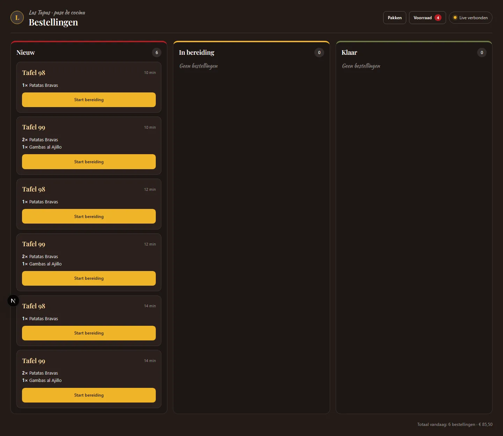
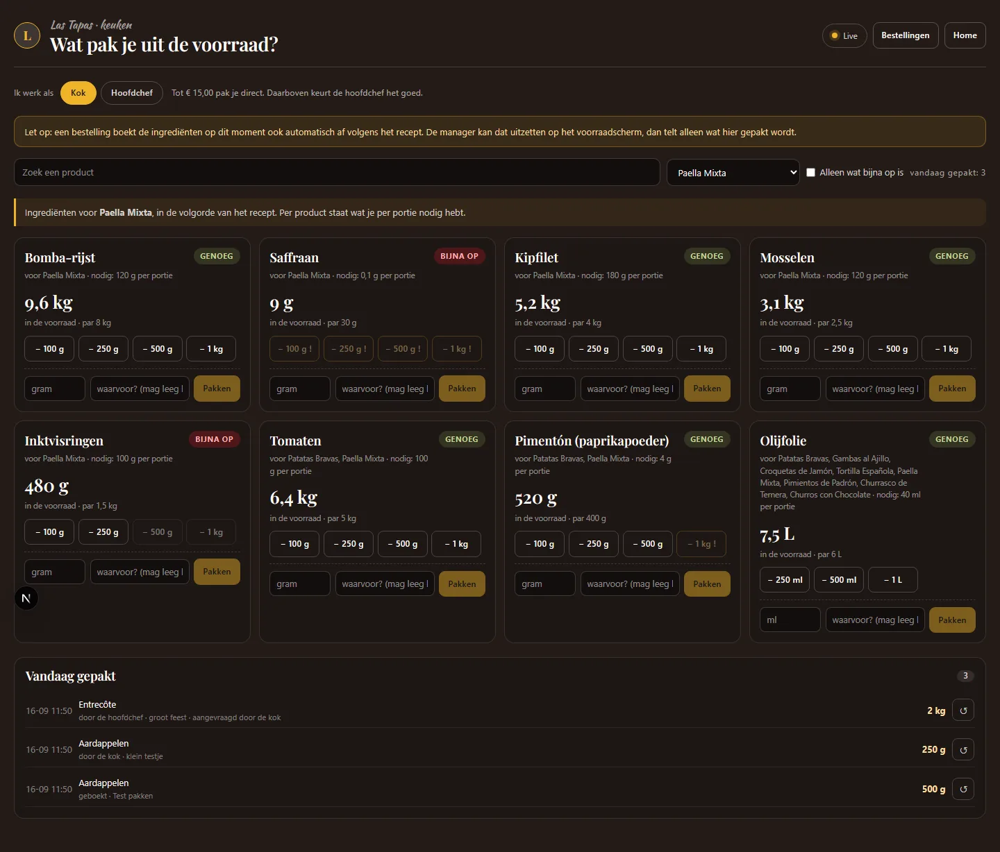
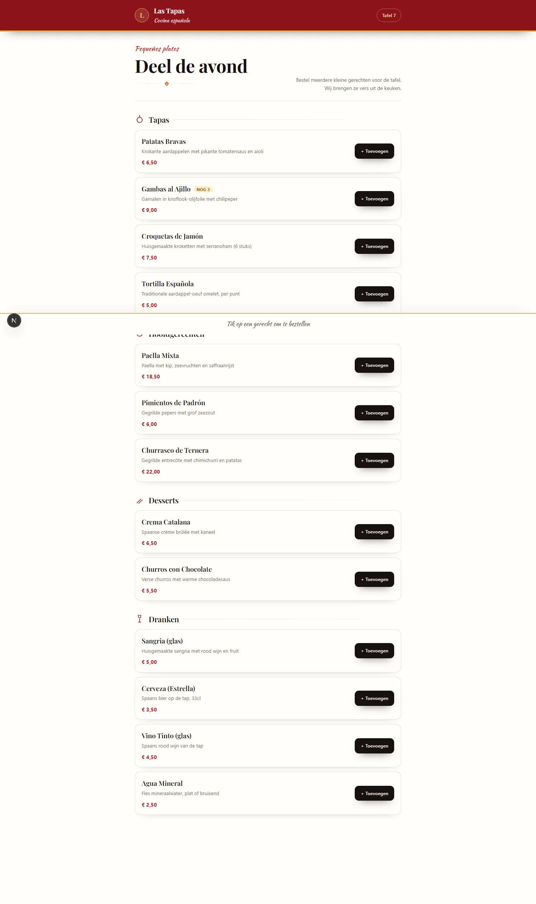
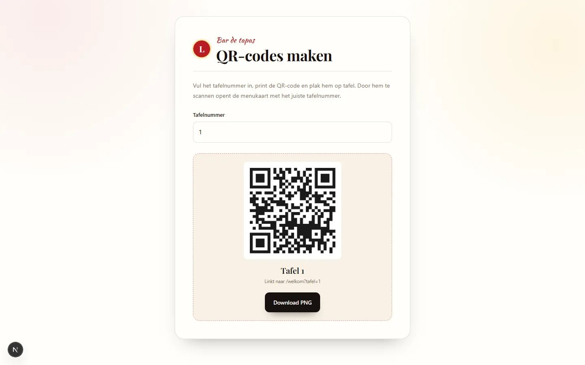

Case — Opleidingsproject · team · 2026
Tafelbestelsysteem Las Tapas
Gasten bestellen vanuit hun stoel via een QR-code op tafel, de keuken ziet de bestelling direct op een eigen scherm en de voorraad loopt automatisch mee. Geen glaasje water meer dat iemand moet komen opnemen.

De opdracht
Een restaurant waar de bediening heen en weer loopt voor elke bestelling. De vraag: kan een gast zelf bestellen, zonder dat de keuken het overzicht verliest en zonder dat de voorraad stilletjes wegsmelt?
Wat er in zit
- QR-code per tafel: gasten bestellen op hun eigen telefoon
- Keukenscherm met wat er klaarstaat, per tafel en op tijd
- Uitgifte met goedkeuring: grote uitgiftes moeten worden afgetekend
- Voorraad per gerecht en per ingrediënt, met eigen beheerscherm
- Ingrediënten opzoeken via de Open Food Facts-API
- Rollen voor keuken, bediening en beheer, elk met eigen rechten
Uitgifte en voorraad
Elke uitgifte gaat door de voorraad heen. Bij grote hoeveelheden vraagt het systeem eerst om goedkeuring, zodat één verkeerde tik geen avond aan voorraad kost. De voorraadgegevens staan in een eigen datamodel, zodat het overzicht klopt zonder zwaar databasesysteem.

Menu en QR
De menukaart is zelf te beheren en kan een gerecht als uitverkocht tonen — de gast ziet dat meteen op de telefoon. De QR-codes worden per tafel gegenereerd, dus uitbreiden naar een nieuwe zaal is een kwestie van printen.


Resultaat
Een compleet systeem van bestelling tot voorraad, met een eigen huisstijl: vast kleurenpalet, doordachte typografie en één consequent vormelement dat overal terugkomt. Alles werkt op mobiel én desktop.
Ook zoiets in gedachten?
Bestelsystemen, planningsborden, klantportalen: als het proces vastloopt op heen-en-weer lopen of overtypen, kan het vaak in een eigen systeem.
Bespreek jouw systeem →